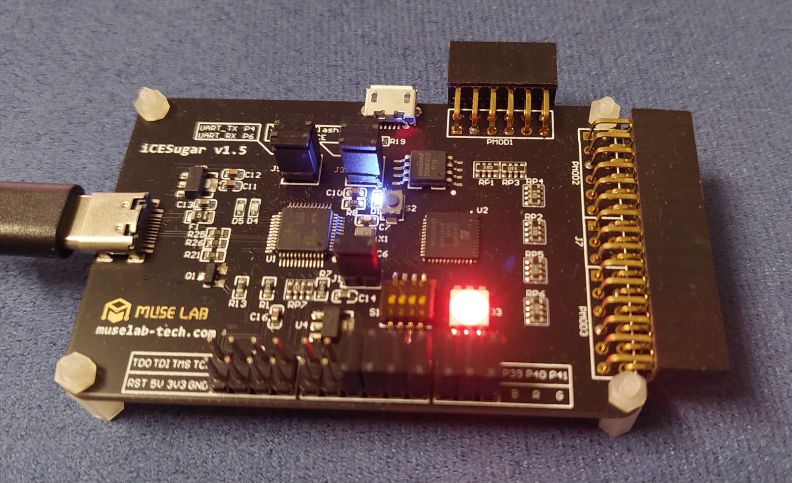
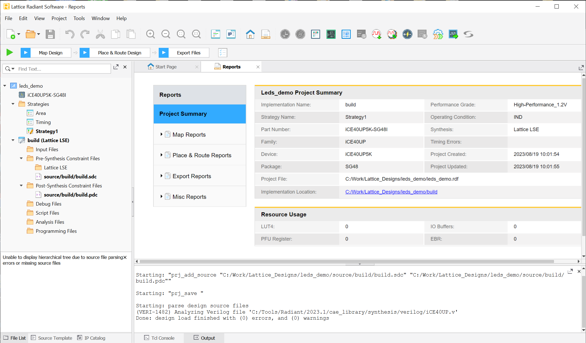
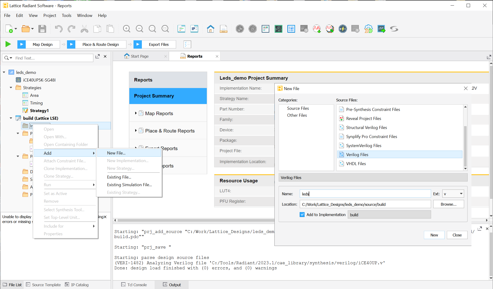
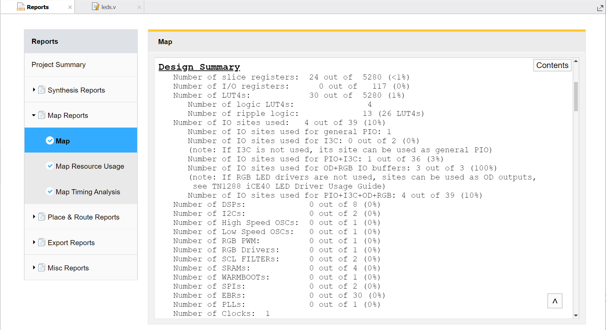

การใช้งานซอฟต์แวร์ Lattice Radiant สำหรับบอร์ด Lattice iCE40UP FPGA#
Keywords: Lattice iCE40 UltraPlus FPGA, Lattice Semiconductor FPGAs, Lattice Radiant Software
▷ ชิป FPGA ของบริษัท Lattice Semiconductor#
Lattice Semiconductor เป็นผู้ผลิตชิป FPGA ซึ่งมีอยู่หลายตระกูล (FPGA Families) ยกตัวอย่างดังนี้
- General-Purpose FPGAs
- Lattice Avant FPGA Architecture (16nm FinFET)
- Avant-E
- Lattice Nexus FPGA Platform (28nm FD-SOI: "fully depleted silicon-on-insulator")
- Certus-NX
- CertusPro-NX
- ECP5/ECP5-5G (40nm process)
- LatticeECP3 (65nm process)
- LatticeECP2/M
- LatticeXP2
- Lattice Avant FPGA Architecture (16nm FinFET)
- Video Bridging & Processing FPGAs
- CrossLink-NX, CrossLinkPlus, CrossLink
- Security FPGAs (with Crypto Hard IP Cores)
- MachXO5-NX
- MachXO3, MachXO3D
- MachXO2
- MachXO
- Ultra-Low Power & Form Factor FPGAs (40nm process)
- iCE40 UltraPlus
- iCE40 Ultra
- iCE40 LP/HX
ซอฟต์แวร์ที่ใช้ในการออกแบบวงจรสำหรับชิป Lattice FPGA (มีเวอร์ชันสำหรับ Windows และ Linux) ได้แก่
- Lattice Radiant Software
- Lattice Propel Design Environment
- Lattice Diamond Software
- iCEcube2 Design Software
ซอฟต์แวร์ Lattice Radiant จะใช้กับชิป Lattice FPGA หลายรุ่นที่ออกมาใหม่ เช่น Avant-E, Certus-NX / CertusPro-NX และ iCE40 Ultra Plus (แต่ถ้าชิปเป็นรุ่นอื่น ๆ จะใช้ซอฟต์แวร์ Lattice Diamond)
จากข้อมูลบนเว็บไซต์ของบริษัท: https://www.latticesemi.com/Support/Licensing (ในขณะที่เขียนบทความนี้) จะเห็นได้ว่า ซอฟต์แวร์ Lattice Radiant รองรับชิป FPGA ในตระกูลต่อไปนี้
- Subscription: Avant-E, MachXO5-NX, CertusPro-NX-RT
- Free: CertusPro-NX, CrossLink, iCE40 UltraPlus
บทความนี้จะกล่าวถึง ขั้นตอนการติดตั้งและใช้งานซอฟต์แวร์ Lattice Radiant (ทดลองใช้เวอร์ชัน v2023.1 สำหรับระบบปฏิบัติการ Windows) และทดลองใช้ในการแปลงโค้ด Verilog ให้เป็นวงจรสำหรับชิป iCE40UP5K และใช้บอร์ด iCE-Sugar เป็นบอร์ดทดลอง

รูป: บอร์ด iCE-Sugar
▷ ขั้นตอนการติดตั้งซอฟต์แวร์ Lattice Radiant#
ถัดไปเป็นการติดตั้งซอฟต์แวร์ Lattice Radiant v2023.1 และในบทความนี้ จะเลือกติดตั้งไฟล์เฉพาะสำหรับชิปในตระกูล iCE40 UltraPlus เท่านั้น และไม่เลือกติดตั้ง ModelSim - Lattice FPGA Edition

รูป: ขั้นตอนการติดตั้งซอฟต์แวร์ Lattice Radiant
โปรแกรมที่เป็นเครื่องมือสำหรับการสังเคราะห์วงจร โดยการแปลงโค้ด HDL (Hardware Description Language) ให้เป็นวงจรระดับลอจิกเกต มีสองตัวเลือกที่ได้มีการติดตั้งมาพร้อมกับ Lattice Radiant คือ
- Lattice Synthesis Engine (LSE)
- Synopsys Synplify Pro (Third-party Software)
รูป: Lattice LSE Design Flow (Source: Lattice Semiconductor)
เมื่อติดตั้งได้แล้ว จะต้องไปยังเว็บไซต์ Radiant Software Licensing ของบริษัท Lattice Semiconductor เพื่อขอรับไฟล์ลิขสิทธิ์ (License File) ในการใช้งานซอฟต์แวร์ซึ่งมีอายุการใช้งานได้หนึ่งปี แนะนำให้เลือกแบบ Node-Locked License File
ผู้ใช้จะต้องระบุ NIC ของเครื่องคอมพิวเตอร์ของผู้ใช้ ซึ่งเป็น MAC Address ของ Ethernet / Wi-Fi Interface ในเลขฐานสิบหก (Hexadecimal) จำนวน 12 ตัว และเมื่อกรอกข้อมูลได้สำเร็จแล้ว ก็จะได้รับไฟล์ (license.dat) ที่ถูกส่งมาทางอีเมล์ของผู้ใช้ที่ได้ลงทะเบียนไว้ เมื่อเปิดใช้งานซอฟต์แวร์ครั้งแรก จะมีการตรวจสอบไฟล์ license.dat ก็ให้เลือกไฟล์ที่ได้ดาวน์โหลดมายังเครื่องของผู้ใช้
▷ ตัวอย่างการใช้ซอฟต์แวร์ Lattice Radiant#
เมื่อเปิดใช้งานซอฟต์แวร์ Lattice Radiant ก็ให้เริ่มต้นด้วยการสร้างโปรเจกต์ใหม่ (New Project) ระบุชื่อโปรเจกต์ และไดเรกทอรีใหม่สำหรับเก็บไฟล์ต่าง ๆ ของโปรเจกต์ จากนั้นให้เลือกชิป FPGA ที่ต้องการใช้งาน
ในตัวอย่างนี้ได้ตั้งชื่อโปรเจกต์เป็น leds_demo และเนื่องจากฮาร์ดแวร์ที่ได้นำมาทดลองคือ บอร์ด iCE-Sugar
ดังนั้นจึงเลือกใช้ชิป iCE40UP5K-SG48I
รูป: หน้าต่างหลักเมื่อได้เปิดใช้งานซอฟต์แวร์ Lattice Radiant
รูป: เริ่มต้นด้วยการสร้างโปรเจกต์ใหม่ และยังไม่ต้องเพิ่มไฟล์ HDL ลงในโปรเจกต์
รูป: เลือกชิป iCE40UP5K-SG48I สำหรับโปรเจกต์

รูป: กลับสู่หน้าต่างหลักเมื่อได้สร้างโปรเจกต์ใหม่แล้ว

รูป: สร้างไฟล์ใหม่สำหรับโค้ด Verilog (.v) แล้วเพิ่มไฟล์ไว้ในโปรเจกต์
ตัวอย่างโค้ด Verilog มีดังนี้
File: leds.v
module leds(
input wire clk,
output wire [2:0] leds
);
localparam N = 24;
reg [N-1:0] counter = 0; // N-bit register
wire [N-1:0] sum;
assign sum = counter + 1'b1;
always @(posedge clk) begin
counter <= sum;
end
assign leds = ~{counter[N-1], counter[N-2], counter[N-3]};
endmodule
ถ้าต้องการกำหนดเงื่อนไขเชิงเวลา (Timing Constraints) สำหรับการสังเคราะห์วงจร เช่น การกำหนดคาบความถี่ของสัญญาณ Clock (ความถี่ 12MHz หรือ มีคาบประมาณ 83.33ns สำหรับบอร์ด iCE-Sugar) ในวงจร ก็ให้เพิ่มบรรทัดต่อไปนี้ ลงในไฟล์ .sdc (Pre-Synthesis Constraint File) ของโปรเจกต์
SDC Timing Constraints
create_clock -name clk -period 83.33 [get_ports clk]
รูป: ทำขั้นตอน Synthesize Design เพื่อคอมไพล์โค้ดและสังเคราะห์วงจรลอจิก
เมื่อได้ทำขั้นตอนการสังเคราะห์วงจรแล้ว ถัดไปจะต้องกำหนดตำแหน่งของขาที่ใช้กับ I/O ของวงจร โดยให้คำสั่งจากเมนู Tools > Device Constraint Editor
รูป: การกำหนดตำแหน่งขา I/O ของวงจร
หรือจะแก้ไขไฟล์ .pdc (Post-Synthesis Constraint File) ของโปรเจกต์ ดังนี้
ldc_set_location -site {40} [get_ports {leds[0]}]
ldc_set_location -site {41} [get_ports {leds[1]}]
ldc_set_location -site {39} [get_ports {leds[2]}]
ldc_set_location -site {35} [get_ports clk]
จากนั้นให้ทำขั้นตอนให้ครบทุกขั้นตอนตามลำดับใน Lattice FPGA Design Flow ซึ่งในขั้นตอนสุดท้าย ก็จะได้ไฟล์ "บิตสตรีม" (.bin) ที่นำไปทดลองกับบอร์ดFPGA ได้
- Synthesize Design
- Map Design
- Place & Route Design
- Export Files
รูป: การทำขั้นตอนได้สำเร็จทุกขั้นตอน
ซอฟต์แวร์ Lattice Radiant จะสร้างไฟล์รายงาน Report Files ในแต่ละขั้นตอน แนะนำให้ผู้ใช้ได้ลองศึกษาดูรายละเอียดในไฟล์เหล่านั้น

รูป: ตัวอย่างผลการสังเคราะห์วงจร และข้อมูลเกี่ยวกับทรัพยากรของชิป FPGA ที่ถูกใช้ไปสำหรับวงจร
นอกจากนั้นแล้ว ผู้ใช้ยังสามารถดูผลการสังเคราะห์วงจรในระดับต่าง ๆ เช่น ในระดับ RTL (Register-Transfer Level) ก็ให้ดูจาก Tools > Netlist Analyzer
รูป: ผังวงจรในระดับ RTL ที่ได้จากการคอมไพล์โค้ด Verilog และสังเคราะห์วงจร
แต่ถ้าอยากจะทราบว่า วงจรประกอบด้วยองค์ประกอบพื้นฐานภายในชิป FPGA อย่างไรบ้าง มีการจัดวางตำแหน่งของลอจิกเซลล์ (Logic Cells) และเลือกเส้นทางสัญญาณเชื่อมต่อกันอย่างไร ก็ให้ดูจาก Tools > Physical Designer
รูป: การแสดงโครงสร้างที่มีลักษณะเป็นอาร์เรย์ภายในชิป FPGA (Placement Mode) และลอจิกเซลล์ (Logic Cells) ที่ถูกนำไปใช้ในการสร้างวงจร
รูป: การแสดงโครงสร้างที่มีลักษณะเป็นอาร์เรย์ภายในชิป FPGA (Routing Mode) และการเชื่อมต่อสัญญาณ (Nets) ระหว่างลอจิกเซลล์ของวงจร
รูป: การแสดงเส้นทางของสัญญาณ Clock ไปยังส่วนต่าง ๆ ของวงจรภายในชิป FPGA
รูป: องค์ประกอบพื้นฐานเชิงลอจิกที่เรียกว่า SLICE ของชิป FPGA ที่ถูกใช้เป็นส่วนหนึ่งของวงจร
รูป: โครงสร้างภายใน SLICE ที่ประกอบด้วย 4-Input LUTs + Carry Logic + Flip-Flops (1 SLICE = 2 Logic Cells)
ถ้าต้องการเปลี่ยนจาก LSE ไปลองใช้ Synplify Pro for Lattice ก็ทำได้ง่าย จากนั้นให้ทำขั้นตอนการสังเคราะห์วงจรใหม่อีกครั้ง แล้วเปิดดูผังวงจรด้วย Netlist Analyzer
รูป: การเลือกเครื่องมือสำหรับการสังเคราะห์วงจร โดยใช้ Synplify Pro for Lattice
รูป: ตัวอย่างผังวงจรที่ได้จากการสังเคราะห์วงจรด้วย Synplify Pro for Lattice
ผู้ใช้สามารถเรียกใช้งาน Synplify Pro for Lattice จากโปรเจกต์ใน Lattice Radiant ได้เช่นกัน โดยเลือกจากเมนู Tools > Synplify Pro for Lattice
รูป: การใช้งาน Synplify Pro for Lattice
รูป: ตัวอย่างผังวงจรในมุมมอง RTL View
▷ กล่าวสรุป#
บทความนี้ได้นำเสนอการติดตั้งและใช้งานซอฟต์แวร์ Lattice Radiant ในเบื้องต้น และมีตัวอย่างโค้ด Verilog เพื่อสาธิตการสร้างวงจรควบคุมการทำงานของ RGB LED สำหรับบอร์ด iCE-Sugar (ชิป Lattice iCE40UP5K FPGA)
This work is licensed under a Creative Commons Attribution-ShareAlike 4.0 International License.
Created: 2023-08-19 | Last Updated: 2023-08-19